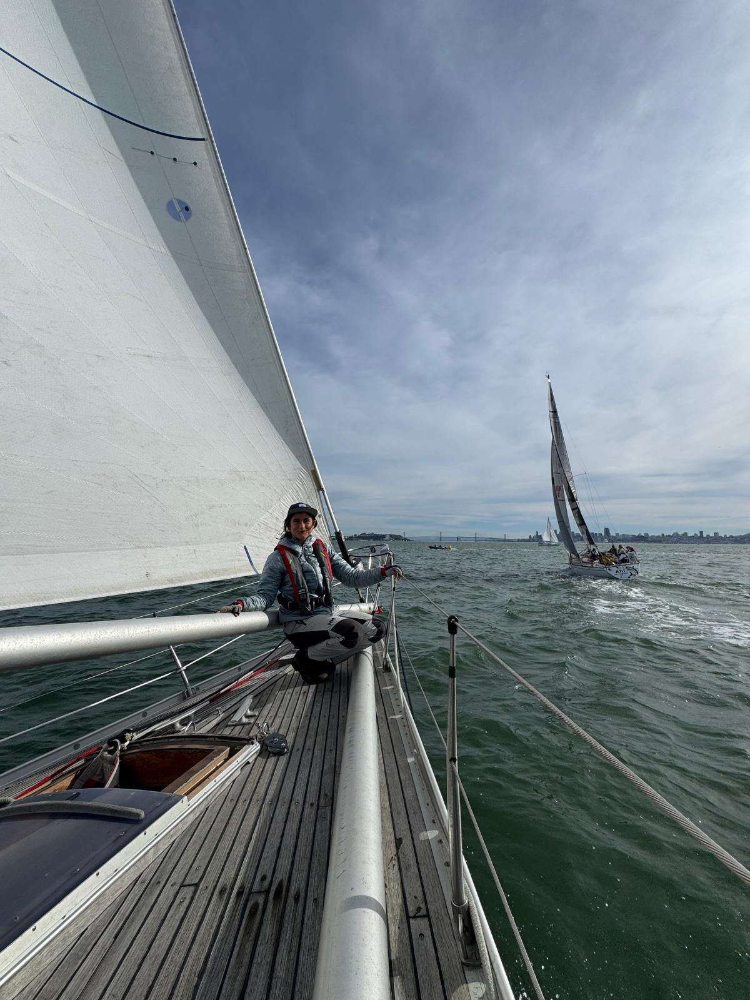
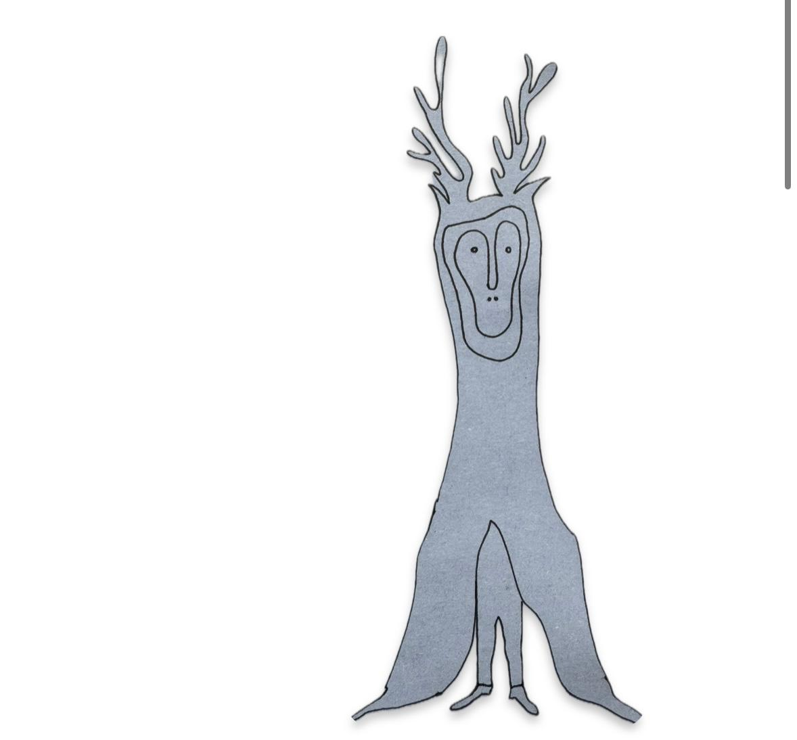

Friend, creativity and outdoor lover.
I am passionate about bringing community together through creative endevors shared meals and time spent engaging with nature.

I am discovering what it means to live in the bay area and the ways of contributing to life here that feels right.

I'm very interested in exploring expression, through authentic (not necessarily beautiful) creations that reflect individual people's uniqueness.